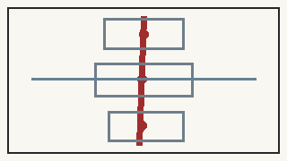

Jing-Zhang People's AI City
AI Advances, People First. People are the civic subjects of the city; AI remains a controllable and replaceable public tool.

Overall provisional site, three key areas and the Jing-Zhang civic public spine.
One Centennial Line, Three Waves of Collective Creation
Jing-Zhang represents collective engineering; Zhongguancun represents collaborative technological creation; the AI era returns technological capacity to ordinary public life. The corridor is first a civic spine and only then an AI demonstration environment.
Full-Site Responsibility Structure
Twelve land-use responsibility cells now cover the entire provisional site: south/middle/north × civic service/open innovation/controlled translation/public realm. The three key areas remain detailed overlays.

Three Key Areas
Zhongzhiyuan is innovation the public can verify; AI Origin Community is AI people can live with; Dazhongsi is industrial value people can share.

Civic AI Charter
Five rights: notice, choice, refusal, human review, appeal/correction.
One responsibility: public authorities, operators and technology providers retain explanation, maintenance, correction, shutdown and exit duties.
Bottom line: public AI must remain under meaningful human control, with ordinary non-AI service preserved.
Mobility and Public Realm
The civic spine, key-area service seams and accessible service loop place walking, cycling, accessibility, shade, rest and staffed help ahead of intelligent equipment.

Two Red Anchors, Three Landmarks
The Civic Engineering Hall is the only large red civic landmark; the People's AI Service Station is small and replicable. The three pilgrimage landmarks are the Civic Engineering Hall, Open-Source Origin Square and Civic Intelligence Arcade. Red comes from material, railway industry and civic function rather than saturated lighting.
Structured Commitments
BASELINE → AI PILOT → HUMAN REVIEW → PUBLIC RECEIPT → SCALE / REVISE / STOP

Evidence and Claim Boundary
All statutory-control gaps remain explicit. New geometry is conceptual. Static figures and A3/A0 deliverables are present, but the package is not yet formal-review-ready. Immediately before the upstream PR, the latest upstream main must be synchronized and the exact post-sync head must rerun all four review gates, finalization and participant preflight.